JK writers Jim and Katell Johnson - Scientific writing, editing and translation

Wrote and edited several issues of The Moors Messenger (quarterly National Park publication)
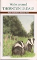
Wrote and edited this walking guidebook, highlighting species conservation
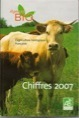
Wrote, copyedited and provided editorial proofreading of the annual publication “Chiffres clés de l’agriculture biologique française”, for issues 2002 to 2008 (each around 170 pages)
Wrote and edited article on monitoring heavy metal pollution using X-ray diffraction. Published in Air, Water and Environment journal.
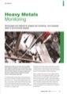
Wrote and edited copy for Abbott Xchange (a regular newsletter for Abbot Laboratories)
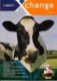
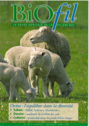
Wrote, copyedited and provided editorial proofreading for the bimonthly magazine Biofil
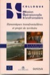
Wrote conference proceedings: Dynamiques transfrontalières et projet de territoire (Mission opérationelle transfrontalière, 1999)
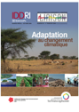
French translation of English articles for Liaison Énergie-Francophonie (LEF), in an issue dedicated to adaptation to climate change
Wrote and edited content for the annual report for the North York Moors National Park Authority, including sections on sustainable agriculture
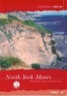
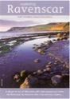
Wrote and edited this guidebook on the historical and environmental significance of a coastal area in North Yorkshire
Current clients include:
Institut du développement durable et des relations internationales (IDDRI)
CNRS La Rochelle (coastal management, species conservation, habitat protection)
Agence Française de Développement
Université de Paris 13 - Laboratoire CERAP
ULC - Uranium Logging & Consulting, (geology and mining)
GEO - Green Energy Option
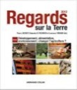
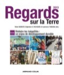
A few examples of work:
English translation and editing of “Planet for Life” 2012 and 2013
French translation of “Regards sur la Terre” 2012 and 2013
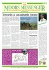